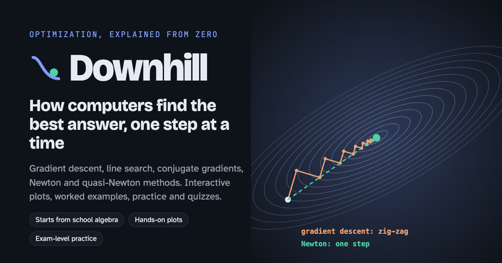
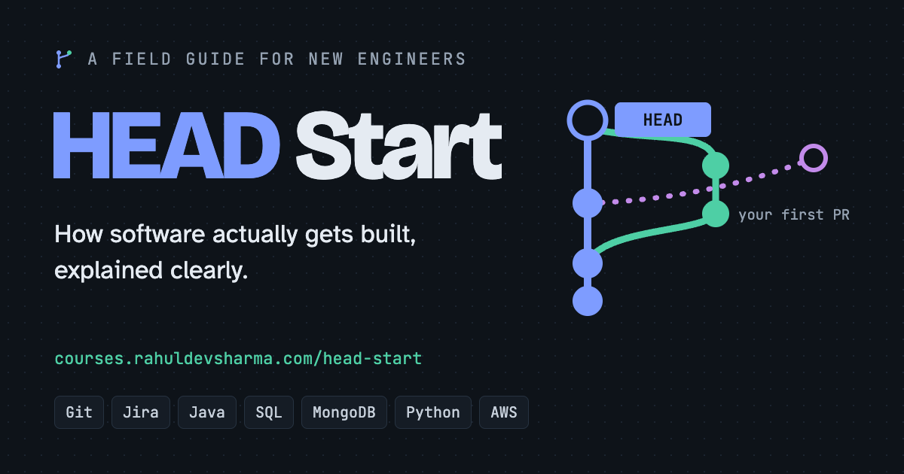
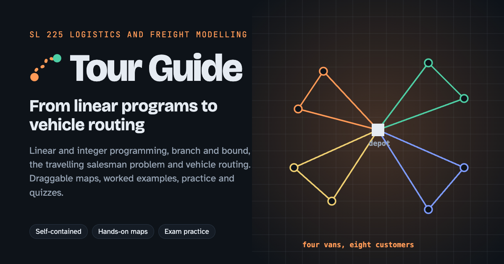
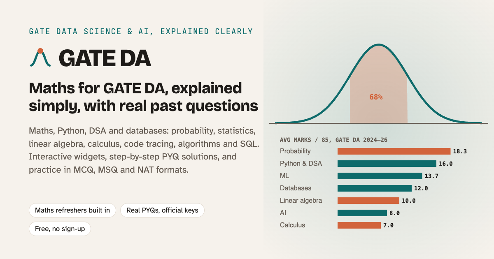

Interactive courses, built to be understood
Each course explains ideas in plain language first, lets you try them hands-on, and checks your understanding with real practice questions. No sign-up: your progress stays in your browser.

Downhill
Computational methods of optimization: optimality conditions, convexity, gradient descent, conjugate gradients and quasi-Newton methods. Based on IISc's E0 230.
Start learning →
HEAD Start
A field guide for new software engineers: Git, code review, databases, APIs, testing and shipping safely, explained clearly.
Start learning →
Tour Guide
Logistics and freight modelling: linear and integer programming, branch and bound, the travelling salesman problem and vehicle routing. Based on IISc's SL 225.
Start learning →
GATE DA
Prep for the GATE Data Science & AI exam: maths, Python & DSA, and databases, with real previous-year questions checked against the official keys.
Start learning →